library(tidyverse)
library(dtab)
library(visu)12 Bar chart summary function
survey = MASS::survey
survey%>%glimpseRows: 237
Columns: 12
$ Sex <fct> Female, Male, Male, Male, Male, Female, Male, Female, Male, Mal…
$ Wr.Hnd <dbl> 18.5, 19.5, 18.0, 18.8, 20.0, 18.0, 17.7, 17.0, 20.0, 18.5, 17.…
$ NW.Hnd <dbl> 18.0, 20.5, 13.3, 18.9, 20.0, 17.7, 17.7, 17.3, 19.5, 18.5, 17.…
$ W.Hnd <fct> Right, Left, Right, Right, Right, Right, Right, Right, Right, R…
$ Fold <fct> R on L, R on L, L on R, R on L, Neither, L on R, L on R, R on L…
$ Pulse <int> 92, 104, 87, NA, 35, 64, 83, 74, 72, 90, 80, 68, NA, 66, 60, NA…
$ Clap <fct> Left, Left, Neither, Neither, Right, Right, Right, Right, Right…
$ Exer <fct> Some, None, None, None, Some, Some, Freq, Freq, Some, Some, Fre…
$ Smoke <fct> Never, Regul, Occas, Never, Never, Never, Never, Never, Never, …
$ Height <dbl> 173.00, 177.80, NA, 160.00, 165.00, 172.72, 182.88, 157.00, 175…
$ M.I <fct> Metric, Imperial, NA, Metric, Metric, Imperial, Imperial, Metri…
$ Age <dbl> 18.250, 17.583, 16.917, 20.333, 23.667, 21.000, 18.833, 35.833,…12.1 Categorical var (totals)
bar_cat <- function(outcome, data, statistics = c("count"), # Can be "perc"
title = NULL, horiz = F, fill = "pink") {
dat <- calc_stats(
data = data,
outcomes = outcome,
statistics = statistics
)
if(statistics == "perc"){dat$estimate <- dat$estimate * 100}
x_lab <- dat$o_lab %>% unique()
plt <- bar(
dat = dat,
x = o_cat,
y = estimate,
x_lab = x_lab,
y_lab = ifelse(statistics %in% "perc", "%", "Count"),
title = title,
fill_family = fill,
horiz = horiz
)
plt
}
bar_cat(data = survey, outcome = "Smoke", statistics = "perc", title = "Smoking habit among the students", fill = "grey4")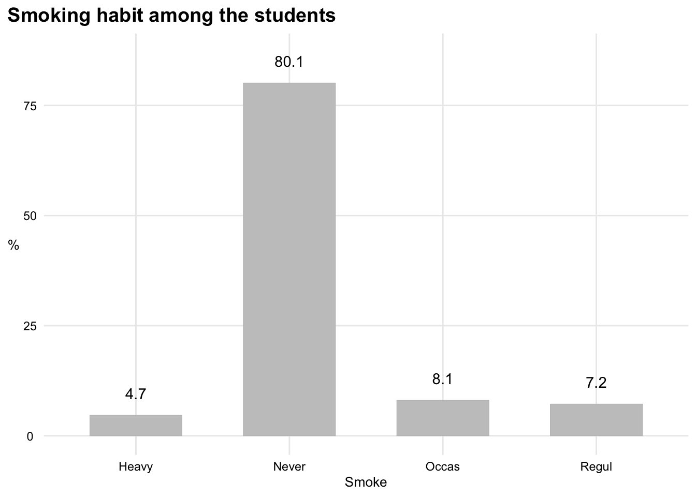
bar_cat(data = survey, outcome = "Smoke", statistics = "count", title = "Smoking habit among the students", horiz = T)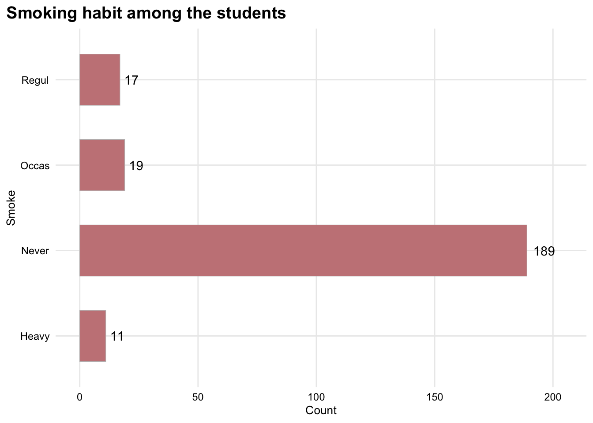
13 Numeric vars (totals)
bar_num <- function(outcomes, data, statistics = c("median"), # can be "mean"
title = NULL, horiz = F, fill = "pink",
x_lab = NULL) {
stopifnot(length(statistics) == 1)
dat <- calc_stats(
data = data,
outcomes = outcomes,
statistics = statistics
)
plt <- bar(
dat = dat,
x = o_lab,
y = estimate,
x_lab = x_lab,
y_lab = ifelse(statistics %in% "mean", "Mean", "Median"),
title = title,
fill_family = fill,
horiz = horiz
)
plt
}
bar_num(data = survey, outcomes = c("Pulse", "Height", "Age"), title = "All numeric vars",
x_lab = "These are different variables, see?")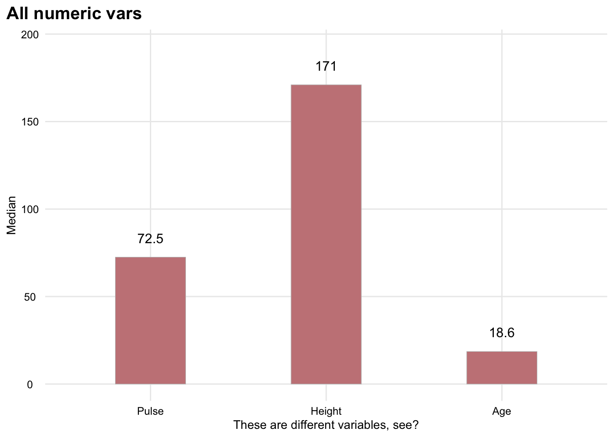
bar_num(data = survey, outcomes = c("Pulse", "Height", "Age"), title = "All numeric vars",
x_lab = "These are different variables, see?",
statistics = "mean")bar_num(data = survey, outcomes = c("Pulse", "Height", "Age"), title = "All numeric vars",
x_lab = "These are different variables, see?",
statistics = c("mean", "median"))Error in bar_num(data = survey, outcomes = c("Pulse", "Height", "Age"), : length(statistics) == 1 is not TRUE13.1 Numeric var (crossbreak)
bar_num_by <-
function(
outcome,
predictor,
data,
statistics = c("median"), # can be "mean"
title = NULL,
horiz = F,
fill = "pink",
show_total = T
) {
stopifnot(length(statistics) == 1)
dat <- calc_stats(
data = data,
outcome = outcome,
predictors = predictor,
statistics = statistics
)
if(show_total==F){dat <- dat %>% filter(p_cat1 != "Total")}
x_lab <- dat$p_lab1 %>% grep("Total", ., value = T, invert = T) %>% unique()
plt <- bar(
dat = dat,
x = p_cat1,
y = estimate,
x_lab = x_lab,
y_lab = ifelse(statistics %in% "mean", "Mean", "Median"),
title = title,
fill_family = fill,
horiz = horiz
)
plt
}
bar_num_by(data = survey, outcome = c("Pulse"), predictor = "Smoke",
title = "All numeric vars",
statistics = c("mean"), fill = "mint2"
)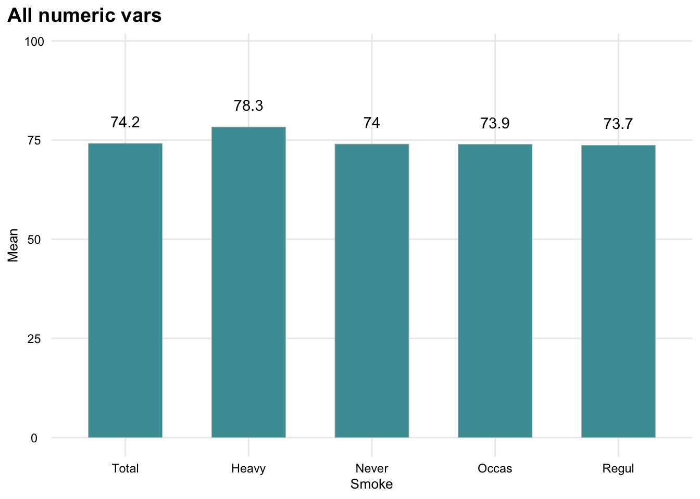
bar_num_by(data = survey, outcome = c("Pulse"), predictor = "Exer",
title = "All numeric vars",
statistics = c("mean"), fill = "mint2",
horiz = T, show_total = F) 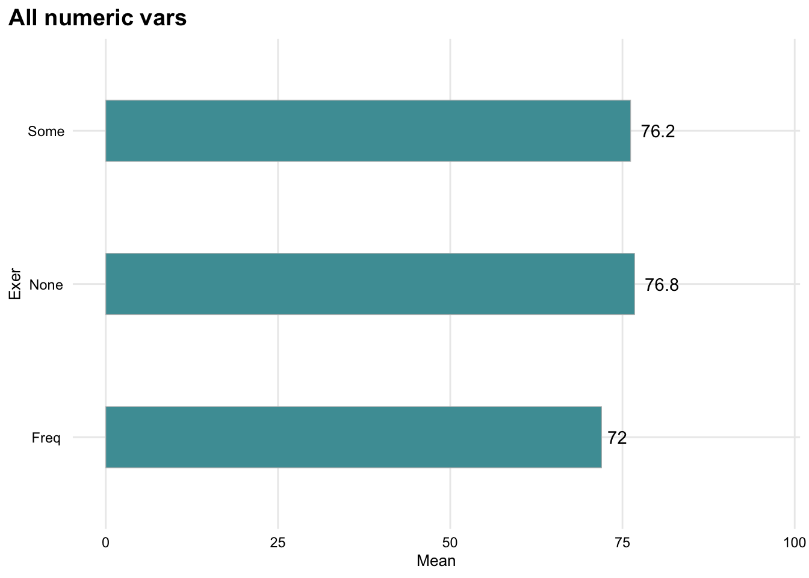
13.2 Categorical var (crossbreak - stack)
bar_cat_by <- function(outcome, predictor, data, statistics = c("perc"), # Can be "count"
title = NULL, horiz = F, fill_family = NULL, show_total = T) {
stopifnot(length(statistics) == 1)
dat <- calc_stats(
data = data,
outcomes = outcome,
predictors = predictor,
statistics = statistics
)
if(show_total==F){dat <- dat %>% filter(p_cat1 != "Total")}
if(statistics == "perc"){dat$estimate <- dat$estimate * 100}
x_lab <- dat$p_lab1 %>% grep("Total", ., value = T, invert = T) %>% unique()
bar_stacked(dat = dat,
x = p_cat1,
y = estimate,
fill = o_cat,
fill_family = fill_family,
x_lab = x_lab,
y_lab = ifelse(statistics %in% "perc", "%", "Count"),
title = title,
horiz = horiz
)
}
bar_cat_by(data = survey, predictor = "Sex", outcome = "Smoke")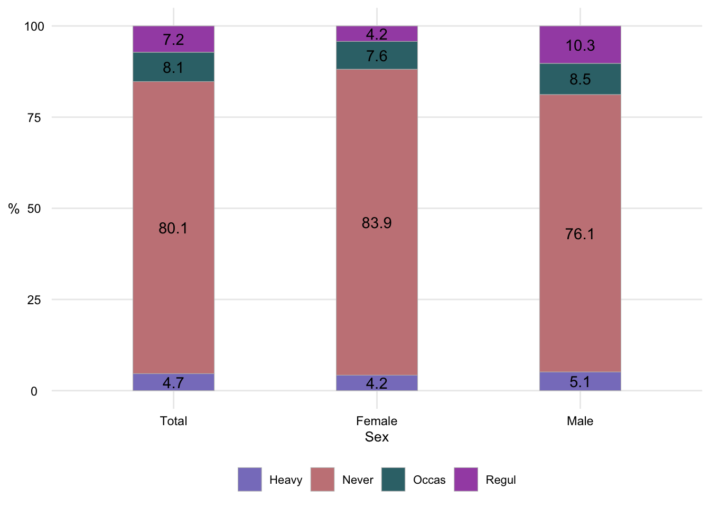
bar_cat_by(data = survey, predictor = "Sex", outcome = "Clap",
horiz = T, fill_family = "blue", show_total = F
)
13.3 Battery bar
survey <- survey %>% mutate(Smoke2 = fct_recode(Smoke,
"Freq" = "Heavy",
"Some" = "Occas",
"Some" = "Regul",
"None" = "Never"))
survey %>% count(Smoke, Smoke2) Smoke Smoke2 n
1 Heavy Freq 11
2 Never None 189
3 Occas Some 19
4 Regul Some 17
5 <NA> <NA> 1survey %>% count(Exer) Exer n
1 Freq 115
2 None 24
3 Some 98survey %>% count(Smoke2) Smoke2 n
1 Freq 11
2 None 189
3 Some 36
4 <NA> 1survey$Smoke2 <- factor(survey$Smoke2, levels = c("Freq", "Some", "None"))
survey$Exer <- factor(survey$Exer, levels = c("Freq", "Some", "None"))
dat <- survey %>%
calc_stats(
outcomes = c("Exer", "Smoke2"),
statistics = "perc"
)
dat# A tibble: 6 × 13
outcome o_lab o_cat stat outcome_type estimate estimate_se base
<chr> <chr> <fct> <chr> <chr> <dbl> <chr> <int>
1 Exer Exer Freq perc categorical 0.485 - 237
2 Exer Exer Some perc categorical 0.414 - 237
3 Exer Exer None perc categorical 0.101 - 237
4 Smoke2 Smoke2 Freq perc categorical 0.0466 - 236
5 Smoke2 Smoke2 Some perc categorical 0.153 - 236
6 Smoke2 Smoke2 None perc categorical 0.801 - 236
# ℹ 5 more variables: base_description <lgl>, unweighted_n <int>,
# p_method <lgl>, p_value <lgl>, cross_break <chr>dat$o_cat%>%levels[1] "Freq" "Some" "None"dat %>%
bar_stacked(
x = o_lab,
y = estimate,
fill = o_cat
)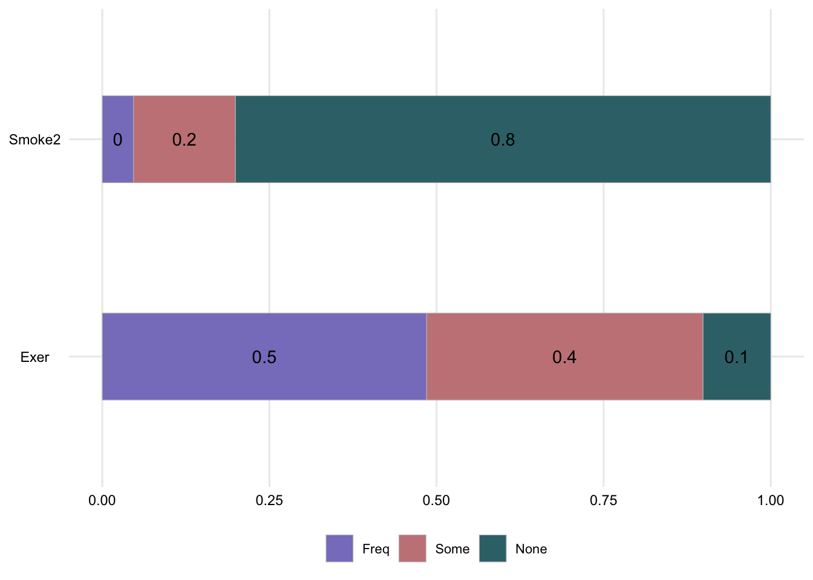
bar_battery <- function(outcomes, data, statistics = c("perc"), # Can be "count"
title = NULL, horiz = T, fill_family = NULL) {
dat <- calc_stats(
data = data,
outcomes = outcomes,
statistics = statistics
)
if(statistics == "perc"){dat$estimate <- dat$estimate * 100}
plt <- bar_stacked(
dat = dat,
x = o_lab,
y = estimate,
fill = o_cat,
y_lab = ifelse(statistics %in% "perc", "%", "Count"),
title = title,
fill_family = fill_family,
horiz = horiz
)
return(plt)
}
bar_battery(outcomes = c("Exer", "Smoke2"), data = survey)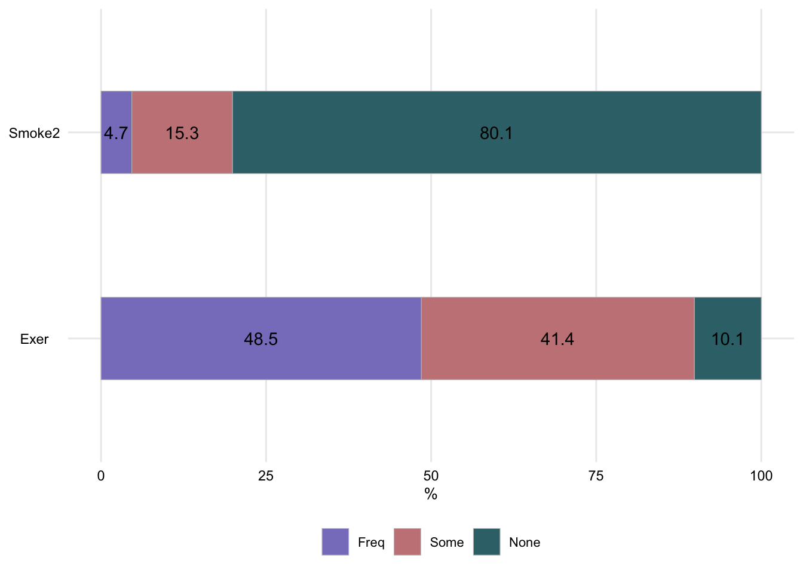
bar_battery(outcomes = c("Exer", "Smoke2"), data = survey,
fill_family = "purple")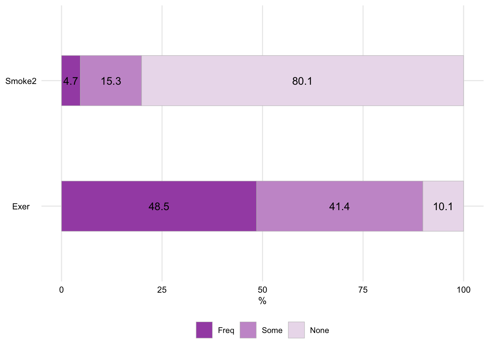
13.4 Categorical var (crossbreak - cluster)
bar_cat_by2 <- function(
outcome,
predictor,
data,
statistics = c("perc"), # Can be "count"
title = NULL,
horiz = F,
fill_family = NULL,
show_total = T) {
stopifnot(length(statistics) == 1)
dat <- calc_stats(
data = data,
outcomes = outcome,
predictors = predictor,
statistics = statistics
)
if(show_total==F){dat <- dat %>% filter(p_cat1 != "Total")}
if(statistics == "perc"){dat$estimate <- dat$estimate * 100}
x_lab <- dat$p_lab1 %>% grep("Total", ., value = T, invert = T) %>% unique()
bar_clustered(dat = dat,
x = p_cat1,
y = estimate,
fill = o_cat,
fill_family = fill_family,
x_lab = x_lab,
y_lab = ifelse(statistics %in% "perc", "%", "Count"),
title = title,
horiz = horiz
)
}
bar_cat_by2(data = survey, predictor = "Sex", outcome = "Smoke")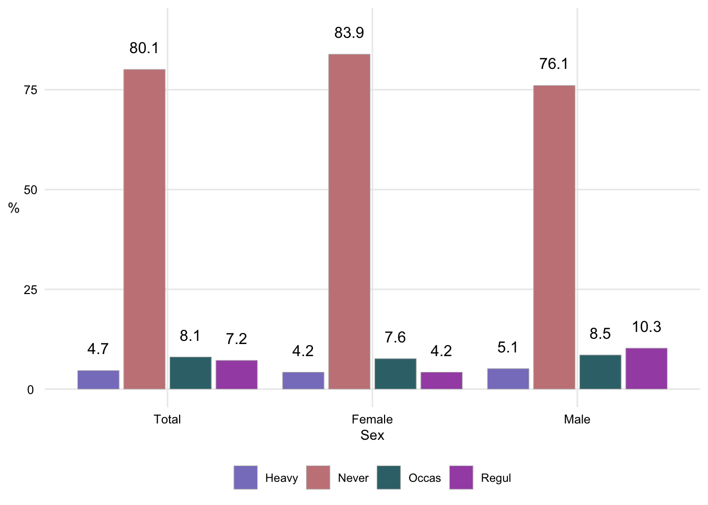
bar_cat_by(data = survey, predictor = "Sex", outcome = "Clap",
horiz = T, fill_family = "blue", show_total = F
)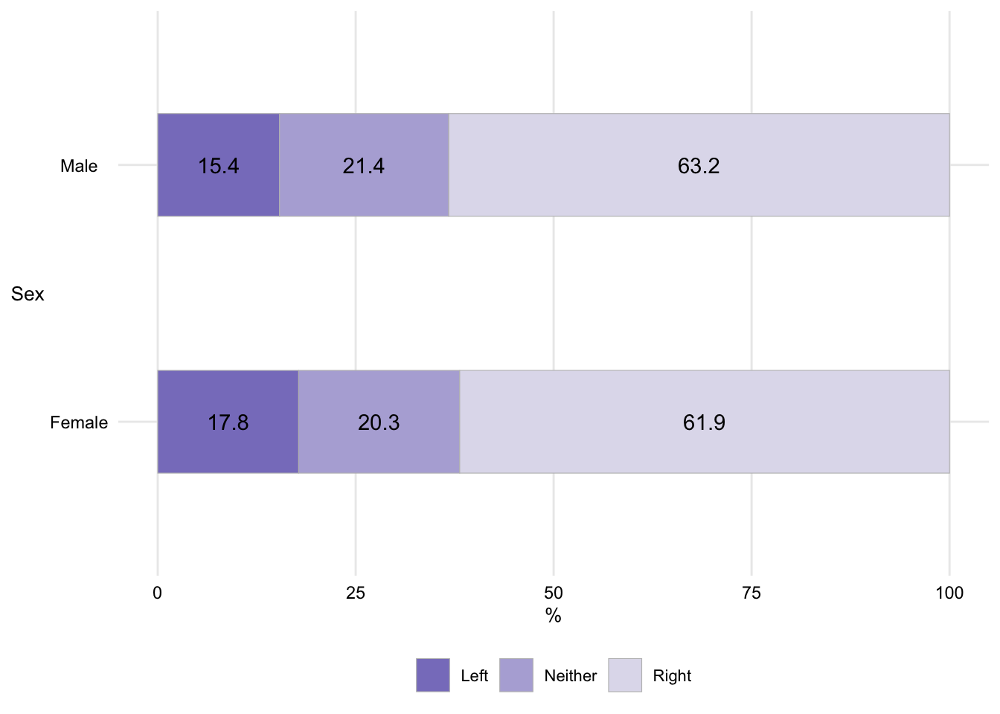
13.5 Combined function
y_fill_expr <- sym("n")
rlang::inject(
survey %>% count(Sex) %>%
bar(x = Sex, y = !!y_fill_expr)
)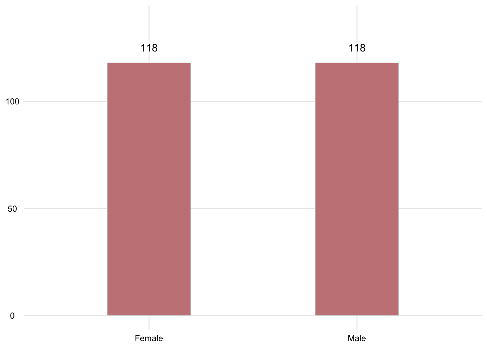
bar_by <- function(
data,
outcome,
predictor = NULL,
cluster = F,
statistics = c("perc"), # Can be "count"
title = NULL,
horiz = F,
palette = NULL,
show_total = T,
x_lab = NULL
) {
stopifnot(length(statistics) == 1)
if(statistics %in% c("mean", "median")){
chart_type = "num"} else {chart_type = "cat"}
fill_arg <- "pink"
dat <-
calc_stats(
data = data,
outcomes = outcome,
predictors = predictor,
statistics = statistics
)
if(chart_type == "num" & is.null(predictor)){
chart_func <- bar
x_arg <- sym("o_lab")
x_lab_arg = x_lab
} else if (chart_type == "cat" & is.null(predictor)){
chart_func <- bar
x_arg <- sym("o_cat")
x_lab_arg <- dat$o_lab[1]
} else if (chart_type == "num" & !is.null(predictor)){
chart_func <- bar
} else if (chart_type == "cat" & !is.null(predictor) & cluster == F){
chart_func <- bar_stacked
fill_arg <- sym("o_cat")
} else {chart_func <- bar_clustered}
if(!is.null(predictor)){
x_arg <- sym("p_cat1")
x_lab_arg <- dat$p_lab1 %>% grep("Total", ., value = T, invert = T) %>% unique()
fill_arg <- sym("o_cat")
}
if(is.null(palette) & identical(chart_func, bar)){palette <- "pink"}
if(show_total==F & !is.null(predictor)){dat <- dat %>% filter(p_cat1 != "Total")}
if(statistics == "perc"){dat$estimate <- dat$estimate * 100}
rlang::inject(
chart_func(dat = dat,
x = !!x_arg,
y = estimate,
fill = !!fill_arg,
fill_family = palette,
x_lab = x_lab_arg,
y_lab = ifelse(statistics %in% "perc", "%", "Count"),
title = title,
horiz = horiz
)
)
}
bar_by(
data = survey,
outcome = "Smoke"
)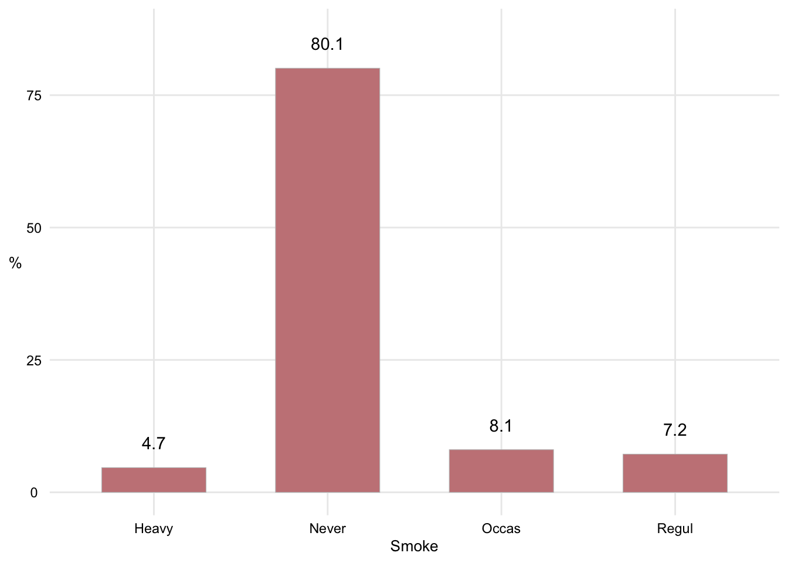
bar_by(
data = survey,
outcome = "Smoke",
predictor = "Sex",
horiz = T
)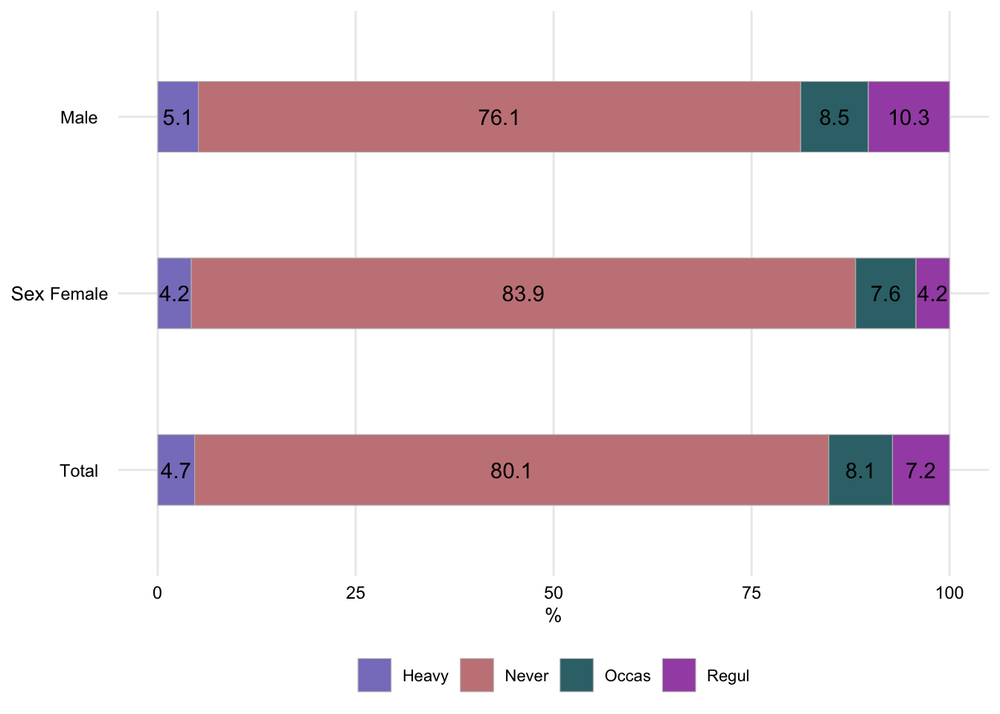
bar_by(
data = survey,
outcome = "Smoke",
predictor = "Sex",
horiz = F,
palette = "blue"
)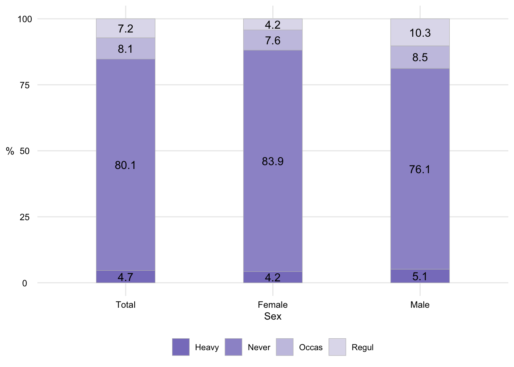
bar_by(
data = survey,
outcome = "Smoke",
predictor = "Sex",
statistics = "count",
horiz = T,
palette = "blue",
cluster = T,
title = "title?"
)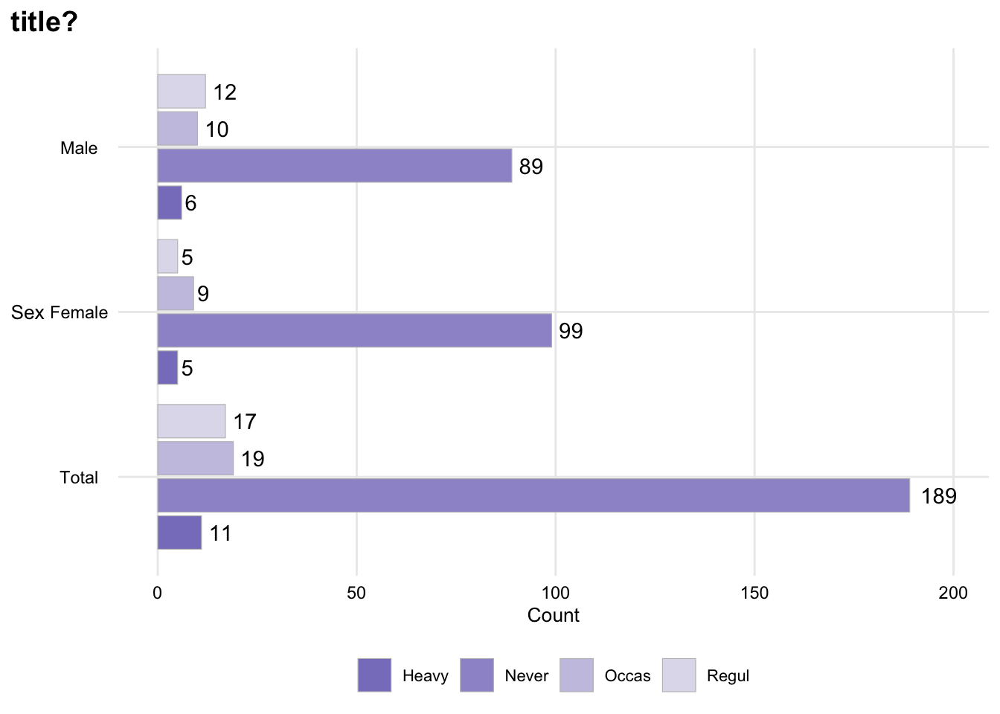